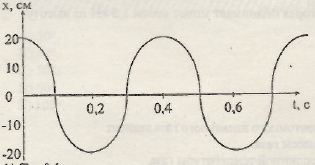

A) T = 0,1 c.
B) T = 0,4 c.
C) T = 0,3 c.
D) T = 0,5 c.
E) T = 0,2 c.
Ответ: B
Решение: Период колебаний - это наименьший промежуток времени, за который
система возвращается в то же состояние, в котором она находилась в первоначальный момент.
По графику, T = 0,4 с.